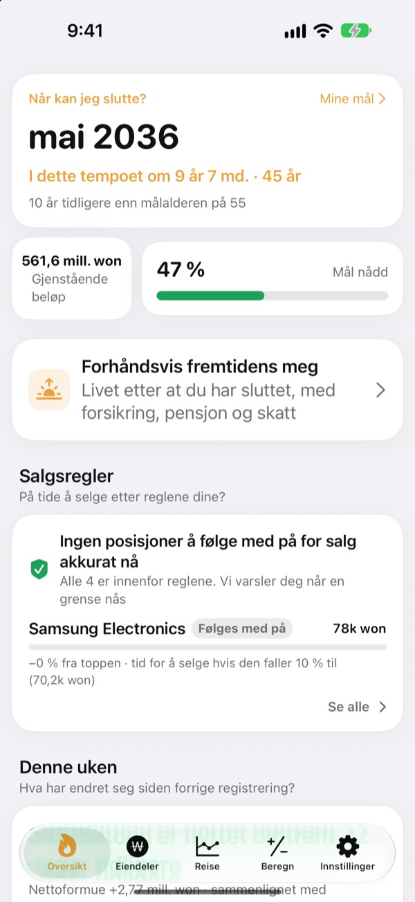
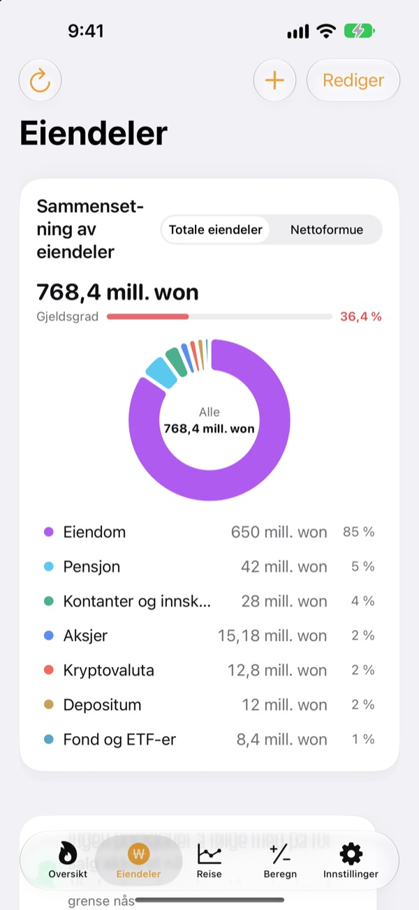
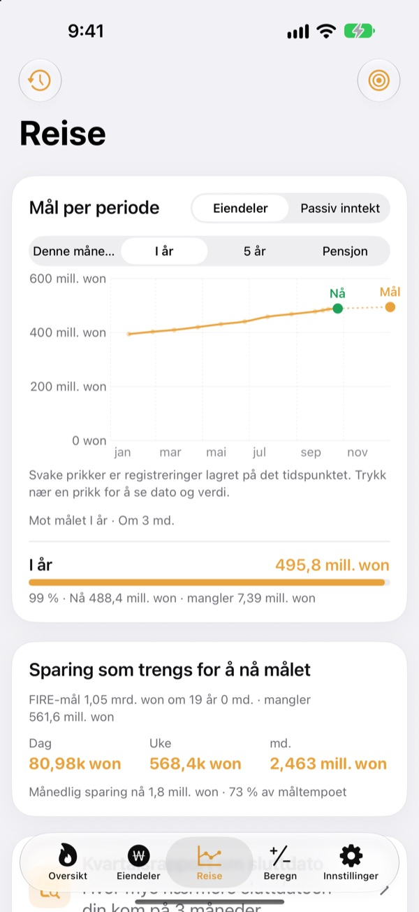
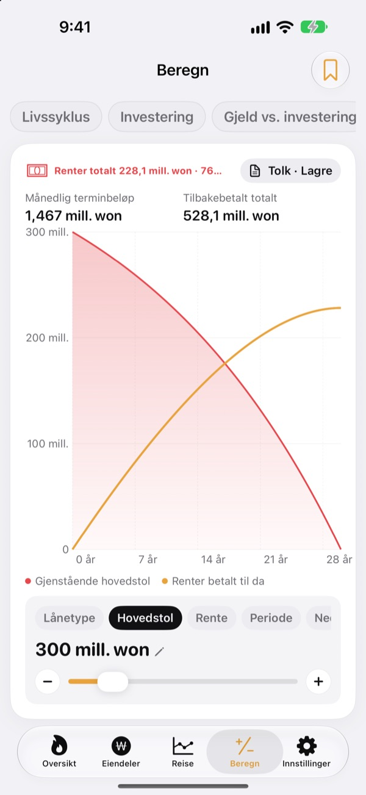

Når kan du slutte?
Se det i tall.
Legg inn hva du bruker og hva du har spart, så får du måneden du kan gå. Hver gang eiendelene endrer seg, ser du om datoen kom nærmere eller gled unna.
Ingen konto. Registreringene blir på enheten din.

Finn sluttdatoen din
Dra i glidebryterne. Det er samme utregning som appen gjør på første skjerm.
Regner du fortsatt i hodet på om du kan slutte?
Når bankkonto, aksjesparekonto, pensjon og depositum ligger hver sin plass, blir selv totalen uklar, og sluttdatoen forblir en gjetning. Toesagak samler alt på én skjerm og regner hele tiden ut på nytt hvilken måned du kan slutte.
Alle eiendeler på én skjerm
Eiendom, aksjer, fond og ETF-er, pensjon, kontanter og innskudd, depositum, krypto og lån, sortert etter type med totale eiendeler, nettoformue og gjeldsgrad.
Kurser på aksjer og krypto hentes slik at verdiene holder seg oppdatert, og et skjermbilde fra meglerappen henter inn beholdning og verdier i én operasjon.

Hvor mye om dagen som skal til
Se denne måneden, dette året, fem år og pensjon som mål, sammen med tidligere registreringer, i ett diagram. Du ser også hvor mye du må spare per dag, uke eller måned for å holde kursen.
Når eiendelene endrer seg, lagres ukens registrering automatisk, så historikken bygger seg opp av seg selv.

Regn på det før store valg
Kalkulatorer for formuesutvikling gjennom livet, investering, nedbetaling av gjeld kontra investering, lån, sparing og innskudd, lønnens kjøpekraft og penger omgjort til timer. Dra i en verdi, så tegnes diagrammet på nytt, og forrige kurve blir stående stiplet til sammenligning.
Gi oppsettene du vender tilbake til et navn, og lagre dem.

Kom i gang på tre steg
- 1
Legg inn forbruk og alder
Omtrentlige tall holder. Sluttdatoen vises med en gang.
- 2
Legg til eiendelene dine
Jo mer du deler dem opp, desto skarpere blir datoen.
- 3
Ta en titt innimellom
Ukentlige registreringer bygger seg opp av seg selv, og appen kan minne deg på det den 1. hver måned.
Slik regner appen
- Mål
- Ett års forbruk etter at du slutter ÷ trygg uttaksrate (ved 4 % tilsvarer det 25 års forbruk)
- Sluttdato
- Måneden da nettoformuen din pluss det du sparer hver måned, med forventet avkastning, når målet
- Totale eiendeler
- Alt du eier, lagt sammen
- Nettoformue
- Totale eiendeler minus gjeld, for eksempel lån
- Fremdrift
- Nettoformue ÷ mål. Du kan også følge den ut fra passiv inntekt
- Dette kan du endre
- Månedlig forbruk, uttaksrate fra 2 til 6 %, forventet avkastning fra 0 til 12 %, alderen du vil slutte
Alle resultater er veiledende beregninger basert på det du legger inn, og er ikke investeringsrådgivning.
Spørsmål
Hvor lagres registreringene mine?
Bare på enheten din. Det er ingen registrering, og ingenting sendes til utvikleren. Slå på iCloud-synkronisering i Innstillinger for å se de samme registreringene på iPhone og iPad via din egen iCloud-konto.
Kursene oppdateres ikke.
Amerikanske og koreanske aksjer, krypto og valutakurser fungerer uten oppsett. Sjekk internettforbindelsen og at tickeren eller koden er riktig. Boligpriser bruker offentlige eiendomsdata fra Korea og krever en gratis tjenestenøkkel lagt inn i Innstillinger.
Hva er forskjellen på totale eiendeler og nettoformue?
Totale eiendeler er alt du eier, lagt sammen. Nettoformue er det samme minus gjeld, for eksempel lån. Sluttdatoen regnes ut fra nettoformuen.
Hvordan flytter jeg registreringene til en ny enhet?
Bruk Eksporter i Innstillinger for å lage en sikkerhetskopifil, ta vare på den i Filer, iCloud Drive eller e-post, og gjenopprett den på den nye enheten. Sikkerhetskopier inneholder aldri API-nøkler. Appen beholder også de 20 nyeste sikkerhetskopiene på enheten automatisk.
Hvordan fungerer salgsvarsler?
For hver beholdning angir du hvor mye den kan falle fra toppen, eller en målkurs. Når den krysser grensen, får du beskjed. Mens kursen stiger, er appen stille. Kursene sjekkes når du åpner appen og når iOS tillater det i bakgrunnen (vanligvis med noen timers mellomrom), så det er ikke sanntidsovervåking.
Kan jeg holde tallene mine private?
Slå på Applås i Innstillinger for å åpne appen med Face ID eller kode. Når låsen er på, viser heller ikke den månedlige påminnelsen noen tall.
Kan jeg se meg rundt først?
Slå på Demodata i Innstillinger for å utforske alle skjermene med eiendelene til en fiktiv person. Slå det av, så er dine egne registreringer tilbake med en gang. Demodata er ikke tilgjengelig mens iCloud-synkronisering er på.
Hvordan sletter jeg alle dataene mine?
Sletter du appen, forsvinner alle registreringer som er lagret på enheten. Vil du beholde en kopi, eksporterer du en sikkerhetskopifil i Innstillinger først.
Kan jeg investere ut fra disse tallene?
Resultatene i Toesagak er veiledende beregninger basert på det du legger inn og en antatt avkastning. De er ikke investeringsrådgivning, og det faktiske utfallet avhenger av markedet og situasjonen din.
Feil, ideer eller spørsmål? Skriv til leeo@kakao.com.